complete_pending_review
This read-only diagnosis evaluates five authenticated retained fields: Q2 control, Q21 parent/endpoint and Q22 parent/endpoint. It takes zero optimizer steps and zero physical-time steps, preserves all gates, and does not normalize, resample or enlarge input fields. Static acceleration is an instantaneous operator evaluation, not a motion simulation.
The same Q2 positive result must reproduce before candidate diagnosis proceeds. Different operators, fields, grids and metric definitions are compared explicitly. A prior positive result is not withdrawn merely because another configuration fails. Tail/guard admission continues to use the registered continuum energy density; D4 Hamiltonian-density tails are separate diagnostics. Localization and normalization changes are measured associations, not proof of boundary causation.
Full diagnosis record · Claim comparison · Optimizer history · Pinned prior documents · Completed-run assessment
| Field | Force ratio | Acceleration max | Tail | Guard | Stationary | Boundary |
|---|---|---|---|---|---|---|
| q2-control | 1.1542460483787707e-05 | 6.636497024101145e-05 | 0.0003015441669190186 | 0.0006463789224437667 | True | True |
| q21-axial-7-3-endpoint | 0.0021617808369545394 | 0.026782056536655736 | 0.001569382023907253 | 0.003150297578275691 | False | False |
| q21-axial-7-3-parent | 0.006010824486705391 | 0.06093931696386327 | 0.00159706864241709 | 0.0032040709678907973 | False | False |
| q22-cable-source-family-endpoint | 0.001829415190997703 | 0.05333108141355414 | 0.0010297388773481328 | 0.0021973005772205224 | False | False |
| q22-cable-source-family-parent | 0.0016192599968131163 | 0.0765043238365327 | 0.0010360829359697306 | 0.0022141255592885525 | False | False |
| Comparison | Disposition | Reason |
|---|---|---|
| Earlier Q2 stationary admission versus current high-Q failures | positive_control_reproduced | Q2 and Q17–Q32 are different sectors and retained configurations. The earlier positive Q2 result is preserved; it is not disproved by failures of these high-Q seeds. |
| Earlier small cell-energy residual versus D4 stationarity | different_operator_and_metric_verified_by_prior_same_field_record | A recorded same-field Q17 comparison already showed a small historical cell residual alongside failed D4 stationarity. The residual definitions are not numerically interchangeable. |
| Earlier Q22 benchmark versus current Q22 cable endpoint | different_checkpoint_geometry_and_metric | Equal Q labels do not identify the same configuration. The historical 129-grid/15.36-box native checkpoint is not the current 161-grid/23.04-box cable-family checkpoint; current force is a normalized D4 ratio. |
| Energy improvement versus force/acceleration admission | different_observables | The measured energy decreases while residuals oscillate or rebound. Energy descent is preserved as a finding but does not imply either stationarity gate passes. |
| 500-attempt ceiling versus stopping below 300 | ceiling_not_fixed_execution_length | All six reached the corrected registered joint-progress stopping condition. No production observations were obtained in the 300–500 range. |
| Boundary fractions versus D4 total static action | density_definitions_distinguished_without_changing_gates | Registered tail/guard fractions use continuum energy_density; the D4 total action uses hamiltonian_density with its sigma correction. Both densities are reported on identical fields. A diagnostic density comparison does not replace the registered gates. |
No exact prior assertion was specified by the user. The named documented comparisons are assessed here; unlisted earlier assertions remain unassessed until their field, operator, metric, gate and provenance are identified.
[
{
"seed": "q21-axial-7-3",
"numerator_factor_endpoint_over_parent": 0.36138067988879946,
"denominator_factor_endpoint_over_parent": 1.0048177884479597,
"force_ratio_factor_reconstructed": 0.3596479720437549,
"endpoint_acceleration_peak_in_guard": false,
"endpoint_guard_force_squared_fraction": 1.5683141456049755e-06,
"scope": "Exact normalization decomposition and measured localization; these do not alone prove boundary causation"
},
{
"seed": "q22-cable-source-family",
"numerator_factor_endpoint_over_parent": 1.1313880834246415,
"denominator_factor_endpoint_over_parent": 1.0014191821384524,
"force_ratio_factor_reconstructed": 1.1297847131394574,
"endpoint_acceleration_peak_in_guard": false,
"endpoint_guard_force_squared_fraction": 4.7663494895591915e-06,
"scope": "Exact normalization decomposition and measured localization; these do not alone prove boundary causation"
}
]Maximum acceleration location: [-0.4800000000000004, -0.4800000000000004, -0.3200000000000003]; nearest face distance: 9.6 model units.
Full spatial metrics · Every cube-shell layer · Radial profiles
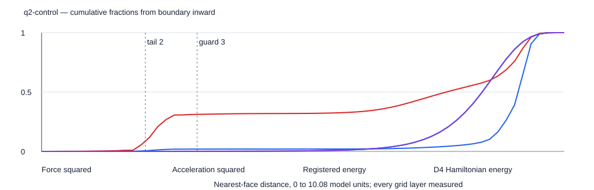
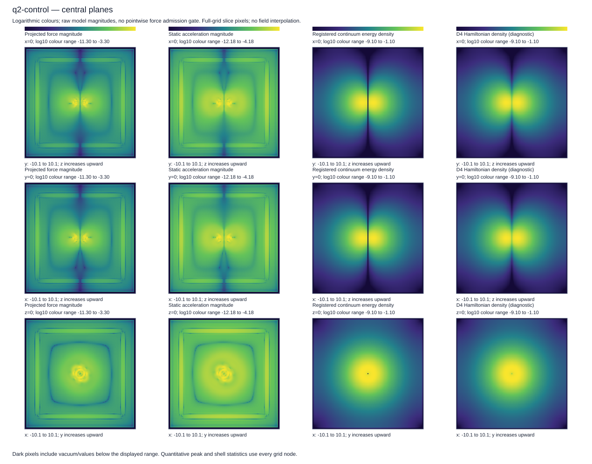
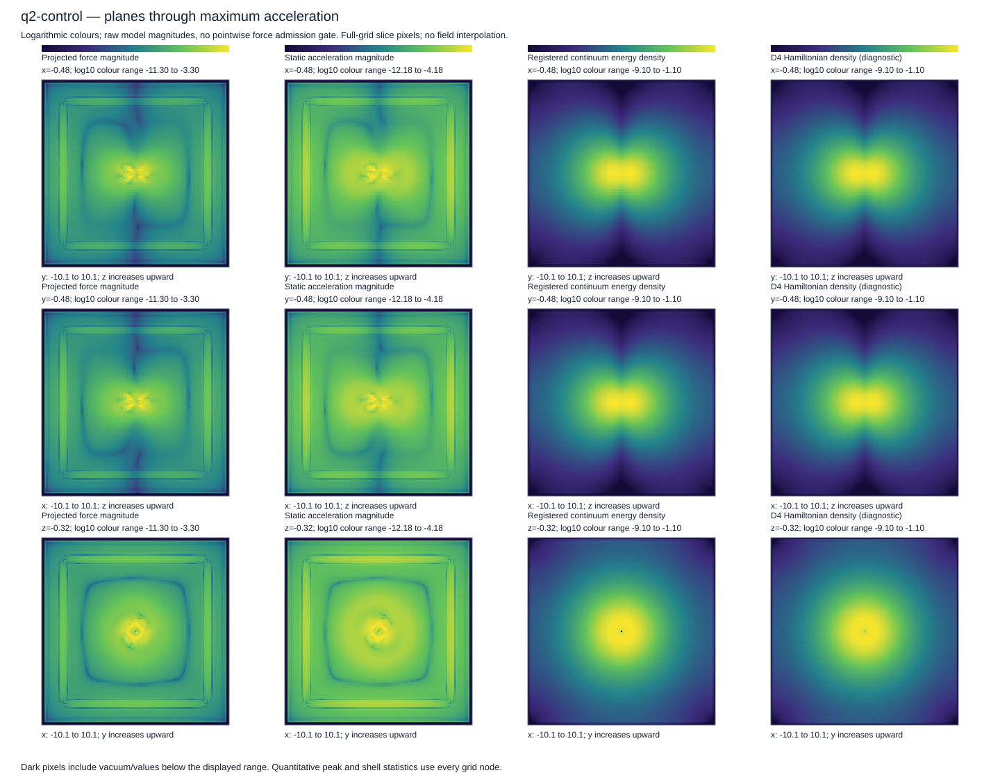
Maximum acceleration location: [-1.4399999999999995, 0.2400000000000002, -0.2400000000000002]; nearest face distance: 10.08 model units.
Full spatial metrics · Every cube-shell layer · Radial profiles
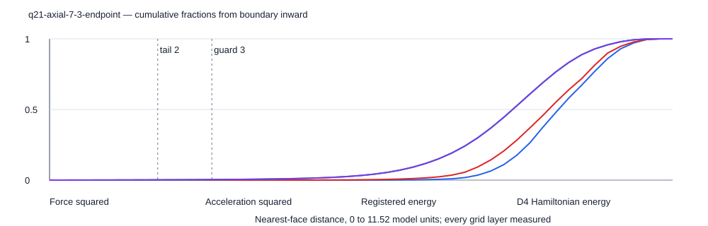
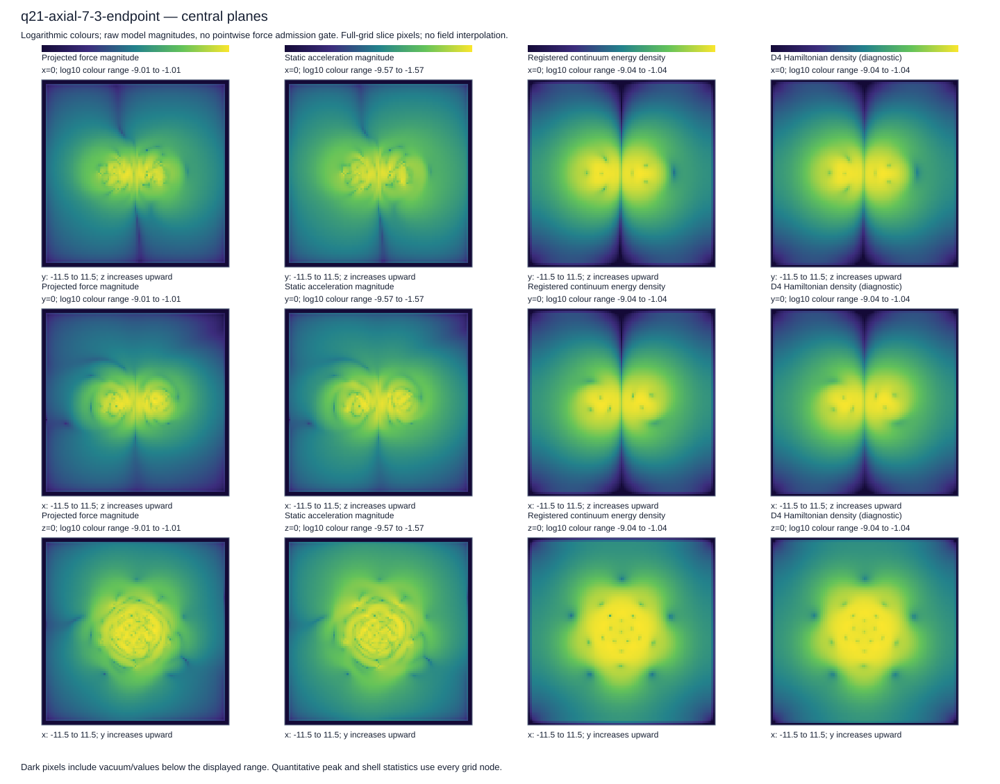
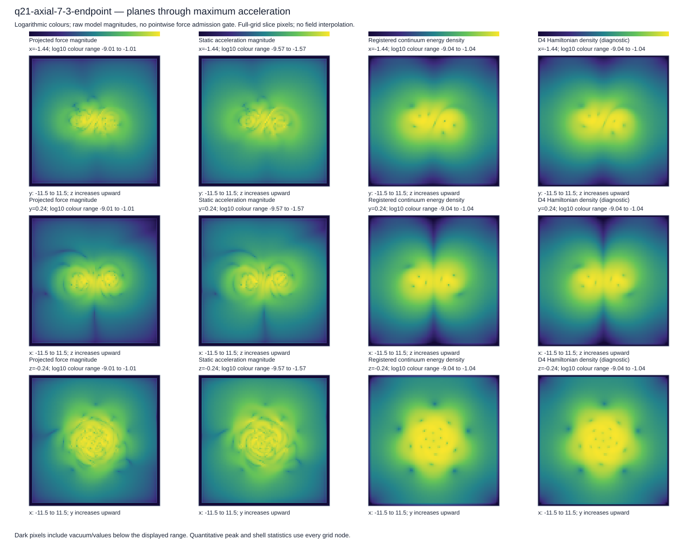
Maximum acceleration location: [-1.1999999999999993, 2.16, 0.2400000000000002]; nearest face distance: 9.36 model units.
Full spatial metrics · Every cube-shell layer · Radial profiles
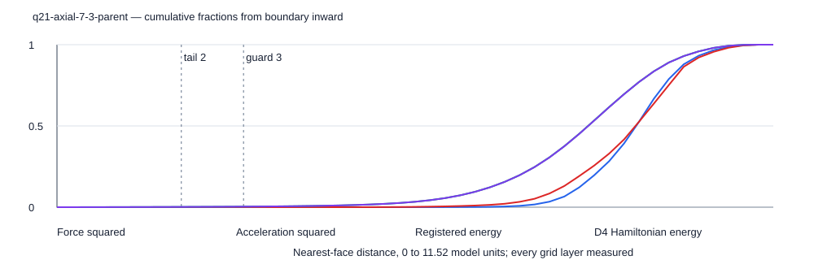
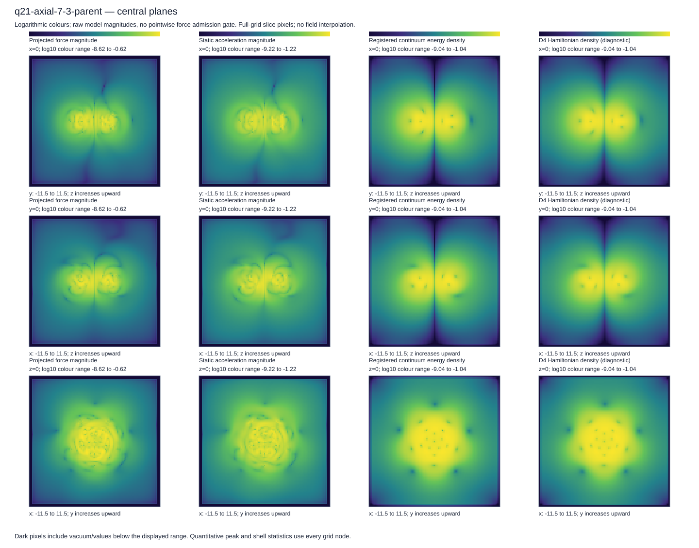
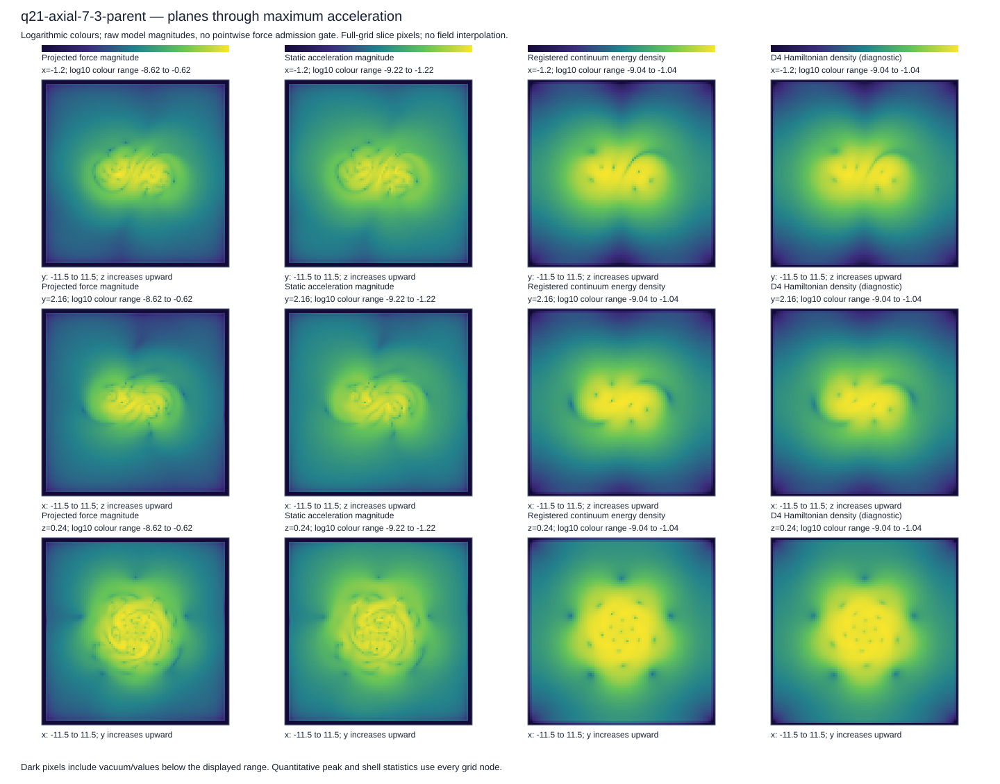
Maximum acceleration location: [1.0079999999999991, 2.016, -0.14400000000000013]; nearest face distance: 9.504 model units.
Full spatial metrics · Every cube-shell layer · Radial profiles
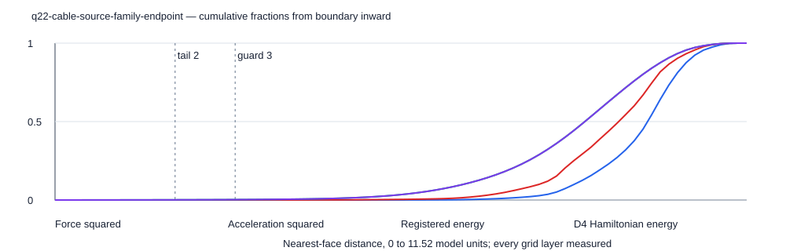
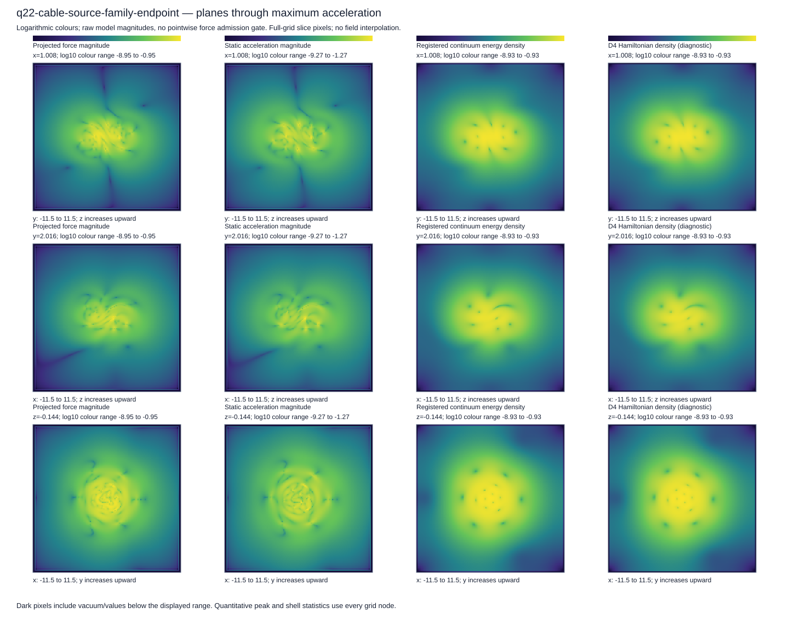
Maximum acceleration location: [1.0079999999999991, 2.016, -0.14400000000000013]; nearest face distance: 9.504 model units.
Full spatial metrics · Every cube-shell layer · Radial profiles
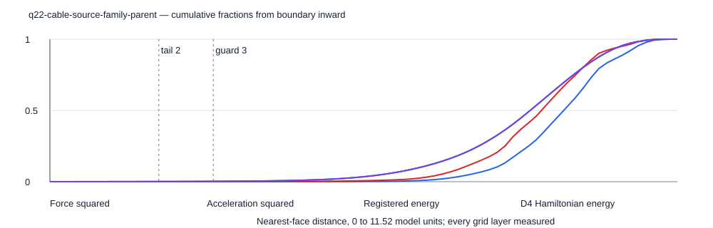
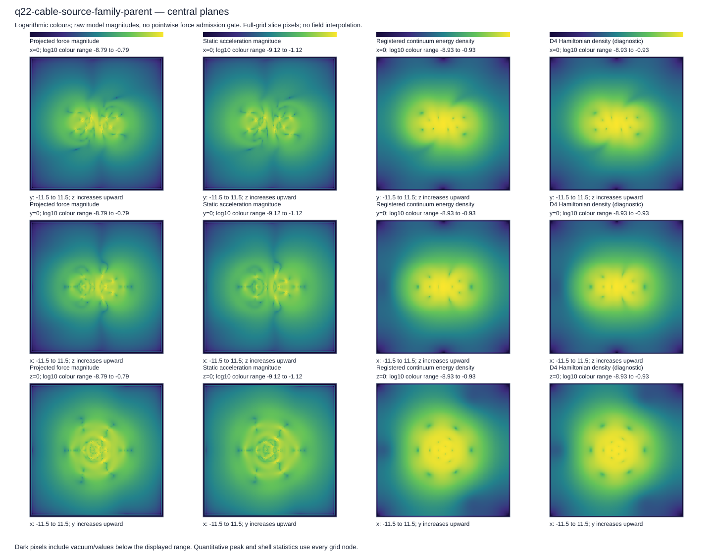
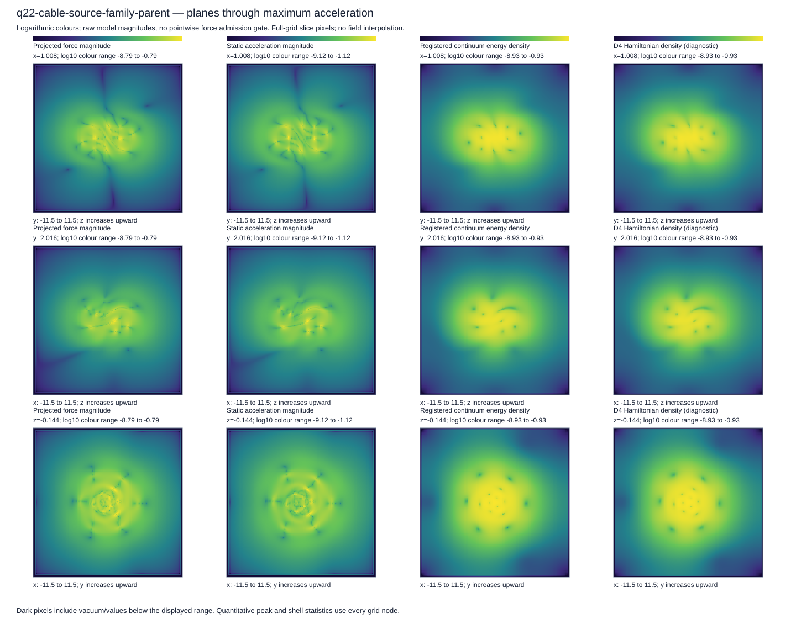
Inspect whether force-squared mass and the acceleration maximum lie inside the guard region or in the interior. A larger-domain test is justified only by a stated boundary hypothesis; an optimizer-memory comparison is a separate question. This diagnosis starts neither test. An unexplained same-field replay mismatch blocks further candidate work and is reported as a failure.
None